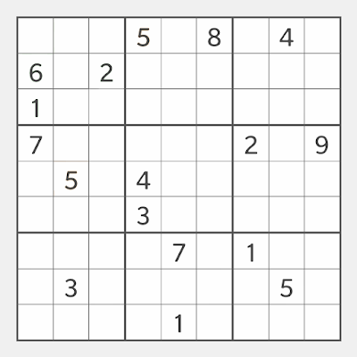
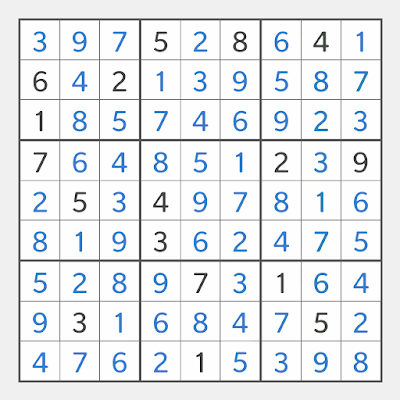
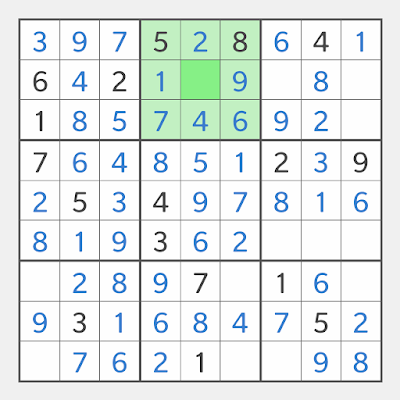
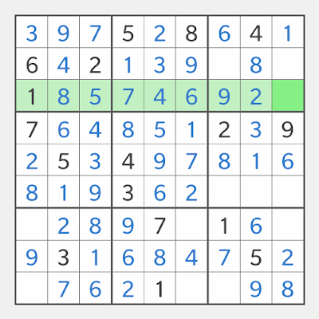
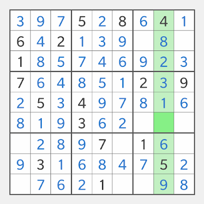

The goal of Sudoku is to fill the empty cells so that each column, each row and each box contains all the numbers from 1 to 9.

There are 9 columns, 9 rows, 9 boxes, which are also called units.
Columns are column 1 to column 9 from left to right.
Rows are row 1 to row 9 from top to bottom.
Boxes are box 1 to box 9 from left to right, top to bottom.
As for the cells, we use 2 digits to locate them, the first digit is the box the cell is in, the second digit is the position the cell is within that box.
Let's get familiar with these terms with examples. In the Sudoku board below, box 2 is highlighted, and the only empty cell in box 2 is the 5th cell in the box, so we say 25 is the only empty cell in box 2.
Since the only number missing in box 2 is 3, so 3 should be filled into 25, we say the solution is 253.

In the Sudoku board below, row 3 is highlighted, and the only empty cell in row 3 is the 9th cell in box 3, so we say 39 is the only empty cell in row 3. Since the only number missing in row 3 is 3, the solution is 393.

In the Sudoku board below, column 8 is highlighted, and the only empty cell in column 8 is the 8th cell in box 6, so we say 68 is the only empty cell in column 8. Since the only number missing in column 8 is 7, the solution is 687.

That's about all the terms you need to know to understand the Sudoku techniques I introduce in this blog. You may find the way I locate the cells different, my argue is that, firstly, it gets rid of the confusion of different ways of representing columns and rows (letters for rows, digits for columns or vice versa?); secondly, it's easier and faster to locate a cell within a box than to count it within a column or a row.
Boxes are playing more important role than columns and rows in Sudoku, after all Latin square has been around for a few hundred years, it's the additional 3x3 box constraint, ingeniously added by its inventor Howard Garns, that makes Sudoku so much more interesting, that makes Sudoku the most popular puzzle in the world.
Sudoku Rules and Terminologies
Technique No.1 Pointing Out - Easy Level
Technique No.2 Pointing Out - Medium Level
Technique No.3 Fitting In - Medium Level
Technique No.4 Fitting In - Hard Level
Technique No.5 Pointing Out - Hard Level
Technique No.6 Pointing Out - Expert Level
Technique No.7 Fitting In - Expert Level
The puzzles in this post are from http://school.maths.uwa.edu.au/~gordon/sudokumin.php The work is licensed under a Creative Commons Attribution 2.5 License. Attribution goes to Gordon Royle and The University of Western Australia.